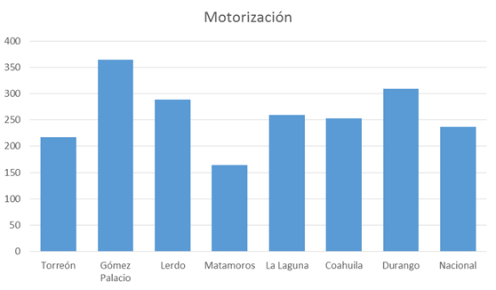
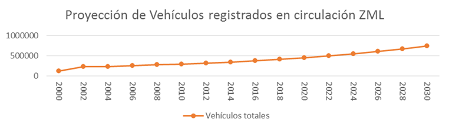
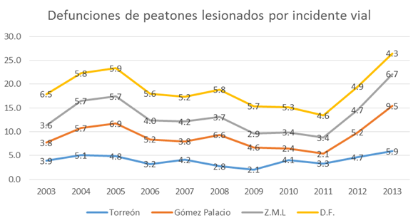
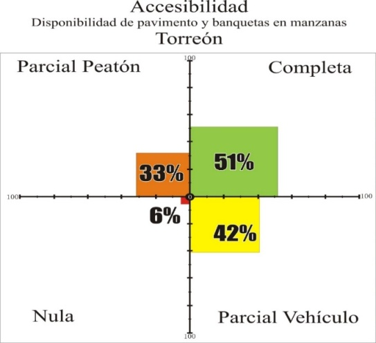
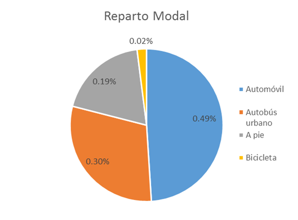

La situación de Movilidad y Transporte se analizó por medio de la planeación metropolitana participativa y se encontró que los problemas principales son:
- La infraestructura de movilidad no es incluyente ni equitativa
- La cultura vial no es suficiente
- Falta de un sistema de transporte multimodal
- Falta de coordinación intermunicipal significativa
- Crecimiento desordenado de la Zona Metropolitana de la Laguna.
Infraestructura de movilidad no es incluyente ni equitativa
Las estadísticas accesibles por ahora para revisar esta problemática, que de hecho se enfocan preponderantemente a la movilidad motorizada, muestran una tendencia preocupante, como puede verse más adelante.
Motorización
Torreón cuenta con un índice de motorización de 217 vehículos registrados por cada mil habitantes, es decir, existe un automóvil para cada 4.6 torreonenses. Mientras que en la Zona Metropolitana de la Laguna se cuentan 260 vehículos registrados por cada mil habitantes, existe un automóvil para cada 3.8 laguneros, sumando un total de 341,421 vehículos registrados para la ZML. (INEGI, 2014)
Gráfica 1. Comparativo regional de nivel de motorización

Fuente: INEGI, 2014
De 2000 a 2014 los vehículos motorizados registrados en circulación crecieron más del 100% (gráfica 2)
Gráfica 2. Proyección de vehículos registrados, en circulación en la Laguna, 2000 - 2030

Fuente: Elaboración propia, 2015
La proyección de habitantes para Torreón se calcula para el año 2030 en aproximadamente 798,014, con una tasa de crecimiento anual de 1.25%, teniendo dentro de 16 años (2030) un acumulado de 24% más de habitantes que los actuales. (CONAPO, 2015)
En cambio, los vehículos motorizados para el 2030 se estarían duplicando, en Torreón pasaría de 217 vehículos por cada mil habitantes a 501 vehículos por cada mil, es decir, 1 de cada 2 torreonenses usaría un coche, trayendo como consecuencia incremento del consumo energético, aumento de contaminación atmosférica, disminución de seguridad vial, aumento de los costos de congestión, exclusión social y ocupación creciente del espacio.
La cultura vial no es suficiente
Esta problemática de cultura vial urbana afecta a todos y en todo. Por ejemplo, se presentan las siguientes situaciones.
Difícil accesibilidad para personas con discapacidad
En cuanto a disponibilidad de rampas para sillas de rueda en las banquetas, la situación es contrastante. El municipio de Torreón tiene la mayor cobertura de los municipios que integran la Zona Metropolitana de la Laguna (14.3%). Por su parte, Gómez Palacio cuenta con la menor cobertura (8.9%). A su vez la población con limitación para caminar es del 2.2% siendo en total 28, 555 en la Zona Metropolitana de la Laguna.
El centro de la ciudad de Torreón es una zona atractora de viajes de la Comarca Lagunera, por lo que comparamos la infraestructura existente para personas con discapacidad contemplando la disponibilidad de rampas en las banquetas con la que cuenta una colonia fuera del centro, es este el caso de Las Carolinas y mientras en el centro el 82.5 % de las banquetas cuentan con rampas en la colonia sólo el 1.8%.
Accidentes provocados por vehículos motorizados
A pesar de que la tasa motorización nos muestra que en Gómez Palacio y Lerdo existen más vehículos registrados por cada mil habitantes que en Torreón, la tasa de accidentes es mayor en Torreón. De cada mil vehículos, 12 sufren algún accidente de tránsito en Torreón contra 10 en Gómez Palacio, 9 en Matamoros y solo 6 en Lerdo. Esto nos pudiera sugerir que los automóviles circulan más tiempo en Torreón que en donde han sido inscritos en el parque vehicular. Ahora, por cada 100 accidentes de tránsito en la Zona Metropolitana de la Laguna, cinco tienen consecuencias mortales.
Gráfica 3. Defunciones de peatones lesionados por incidente vial, 2003 - 2013

Fuente: Sistema Nacional de Información en Salud (SINAIS). Registros administrativos INEGI, 2013.
La tasa de defunciones de peatones involucrados en accidentes viales en Torreón pasó de 4.1 en 2010 a 5.9 en 2013, mayor que en el Distrito Federal que fue de 4.3.
Educación vial
La tasa de defunciones de peatones involucrados en accidentes viales (atropellamiento) por cada 100,000 habitantes en Torreón pasó de 4.8 decesos de peatones en 2010 a 5.4 en 2012, en la ciudad de México pasó de 5.3 a 4.6. En el caso específico de los viajes a pie, lo que podemos deducir de la tabla comparativa es lo expuesto que puede estar un peatón a sufrir accidentes, por no formar parte explícita del sistema y uso de la estructura vial y su reglamentación.
Accesibilidad
Al observar la correlación entre la existencia de pavimento y banquetas, se detecta un patrón que se repite en las cuatro ciudades: la accesibilidad a las banquetas es más limitada que el acceso a vialidades pavimentadas.
La ciudad de Torreón cuenta con 281 km longitudinales de vialidades principales, secundarias y periféricas y 0.50 km de vialidades peatonales (únicamente dos calles).
Gráfica 4. Disponibilidad de pavimento y banquetas en manzana en Torreón.

Fuente: Elaboración propia, 2015
En el caso de Torreón la mitad de las manzanas cuenta con una infraestructura completa (pavimento y banquetas), ya que los vehículos y los peatones pueden circular aparentemente sin contratiempos (se considera la existencia o no de la infraestructura, no el estado físico actual). Es decir 5,249 manzanas cuentan con todas sus vialidades pavimentadas y con banquetas y sólo 577 manzanas no cuentan con pavimento ni banqueta en sus vialidades.
Accesibilidad para personas con discapacidad
En cuanto a disponibilidad de rampas para sillas de rueda en las banquetas, el municipio de Torreón tiene una mayor cobertura que el resto de los municipios que integran la Zona Metropolitana de la Laguna (14.3%). Por su parte, Gómez Palacio cuenta con la menor cobertura (8.9%). A su vez la población con limitación para caminar es del 2.2% siendo en total 28, 555 en la Zona Metropolitana de la Laguna.
El centro de la ciudad de Torreón es una zona atractora de viajes de la Comarca Lagunera, por lo que comparamos la infraestructura existente para personas con discapacidad contemplando la disponibilidad de rampas en las banquetas con la que cuenta una colonia fuera del centro, es este caso Las Carolinas, y mientras en el centro el 82.5 % de las banquetas cuentan con rampas en la colonia sólo el 1.8%.
| Colonia | Porcentaje de población con discapacidad | Porcentaje de manzanas con rampas |
|---|---|---|
| Centro | 5.4% | 82.5% |
| Colonia muestra | 2.4% | 1.8% |
Fuente: Elaboración propia, 2015
En la zona centro de Torreón existe infraestructura que permite un desplazamiento aceptable dentro del sector. En la colonia Las Carolinas existe sólo una banqueta con rampa.
Falta un sistema de transporte multimodal
Para sensibilizar sobre la urgencia de este sistema intermunicipal multimodal se presenta la siguiente información sobre la movilidad en, y entre, las cuatro ciudades.
Movilidad intermunicipal
La población ocupada de la Zona Metropolitana Laguna se distribuye fuera de su municipio de residencia de la siguiente forma: 4 % de los trabajadores de Torreón trabajan en otro municipio de la ZML, 20 % de los matamorenses, 12 % de los gomezpalatinos y 28 % de los lerdenses. Esto nos señala una dinámica intermunicipal en vivienda y trabajo.
De la población ocupada que labora en otro municipio que no es donde vive la distribución es la siguiente:
Tabla 6. Distribución de la población ocupada que trabaja en otro municipio diferente del que vive
| Personas \ Municipio donde trabajan | Torreón | Gómez Palacio | Matamoros | Lerdo | Fuera de ZML |
|---|---|---|---|---|---|
| Torreonenses | 48.1% | 5.7% | 6.7% | 39.5% | |
| Gomezpalatinos | 45.3% | 0.2% | 14.7% | 40.0% | |
| Matamorenses | 95.5% | 4.2% | 0.3% | 10.9% | |
| Lerdenses | 28.1% | 50.6% | 0.4% | 20.9% |
Fuente: Elaboración propia con datos de INEGI 2010
Infraestructura y transporte público
Entre los municipios de Torreón y Matamoros, se realizan diariamente 1’818,954 viajes (calculando 2.5 viajes por habitante), donde 887,595 de los viajes utilizaron automóvil particular, 555,982 en transporte público, 341,181 a pie y 34,196 en bicicleta.
Tabla 7. Número de viajes por tipo de transporte
| Modalidad | Viajes Diarios | Porcentual |
|---|---|---|
| Automóvil Particular | 887,595 | 49% |
| A Pie | 341,181 | 19% |
| Transporte Público | 555,982 | 30% |
| Bicicleta | 34,196 | 2% |
| Total General | 1,818,954 | 100% |
Fuente: 2011. Logit.
Gráfica 5. Reparto modal por tipo de transporte

Fuente: 2011. Logit.
El tiempo que el pasajero pasa dentro de la unidad es de 45 minutos en promedio, más 10 minutos de espera para el abordaje de la unidad (Transconsult, 2014). Para ilustrar la situación en términos de eficiencia y productividad de los 111,196 usuarios diarios de transporte público y para tener una comparativa, al invertir una hora de tiempo de todos los trabajadores de la región, se dejaría de generar 37 millones de pesos diarios. Si se invierten solamente 25 minutos la cifra disminuye a 15 millones de pesos diarios.
El tiempo promedio que un peatón camina ya sea de origen-destino o entre otros modos de movilidad es de 15 minutos, mientras que una persona pasa en promedio 23 minutos en motocicleta, 22 minutos en bicicleta, 24 minutos en vehículo particular, 45 minutos en transporte público, 20 minutos en taxi y 44 minutos en transporte de persona.
Tabla 8. Duración promedio por modo de transporte
| Modo | Duración promedio (min) |
|---|---|
| Peatonal | 15 |
| Motocicleta | 23 |
| Bicicleta | 22 |
| Vehículo particular | 24 |
| Transporte Público | 45 |
| Taxi | 20 |
| T. de Personal | 44 |
Fuente: Elaboración propia, 2015
Falta de coordinación intermunicipal significativa
Históricamente ha sido muy difícil una coordinación intermunicipal entre las ciudades que conforman la Zona Metropolitana de la Laguna. No se ha dado una visión de planeación común, ni tampoco un enfoque realmente metropolitano. No hay, y es imprescindible, un marco jurídico fundamental que funcione conjuntamente entre las cuatro ciudades. Ello ha provocado la ausencia de instituciones y planes estratégicos comunes, y ahora se hacen evidentes estas carencias.
Crecimiento desordenado de la Zona Metropolitana de la Laguna
Las estadísticas y descripciones incluidas en las páginas anteriores muestran un desequilibrio significativo en el crecimiento de las ciudades de la Zona Metropolitana de la Laguna, y muestran el desorden con que ha ocurrido el crecimiento y desarrollo de las mismas. Evidentemente ha ocurrido por falta de planeación, articulación de normatividad y reglamentaciones, y fundamentalmente por visiones y voluntades políticas aisladas en sí mismas, que ocurrieron en el pasado.
Ilustración 7 Crecimiento Histórico de la Zona Metropolitana de la Laguna
Fuente: Elaboración propia, 2015
Índice | Siguiente: Medio Ambiente y Sustentabilidad